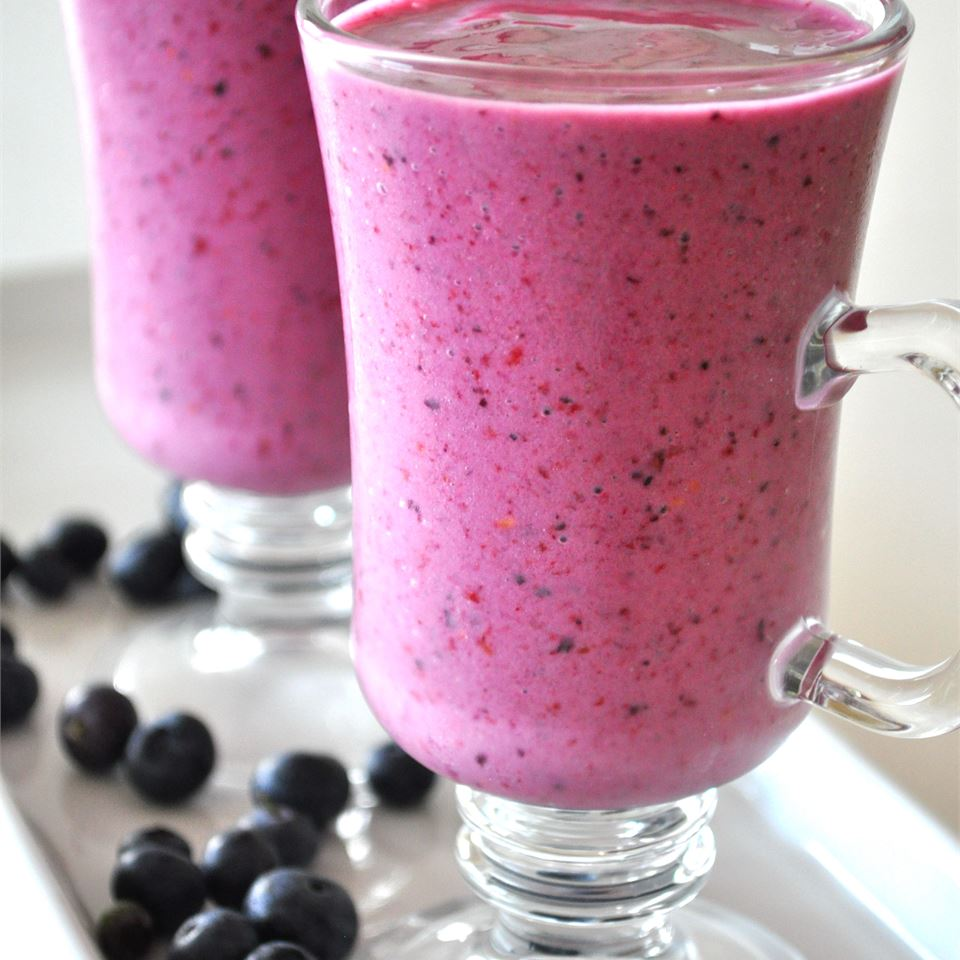

Classic Waffles

Description
This easy fruit smoothie recipe calls for just three ingredients--yogurt, fruit juice and whatever frozen fruit you have on hand. Mix up your combinations from day to day for a healthy breakfast or snack you'll never get bored with.
Ingredients
- 1 cup strawberries
- 1 banana
- ½ cup yogurt
- ¼ cup pineapple juice
- 1 ½ teaspoons white sugar
- 1 teaspoon orange juice
- 1 teaspoon milk
<
Steps
- Combine strawberries, banana, yogurt, pineapple juice, sugar, orange juice, and milk in a blender; blend until smooth.